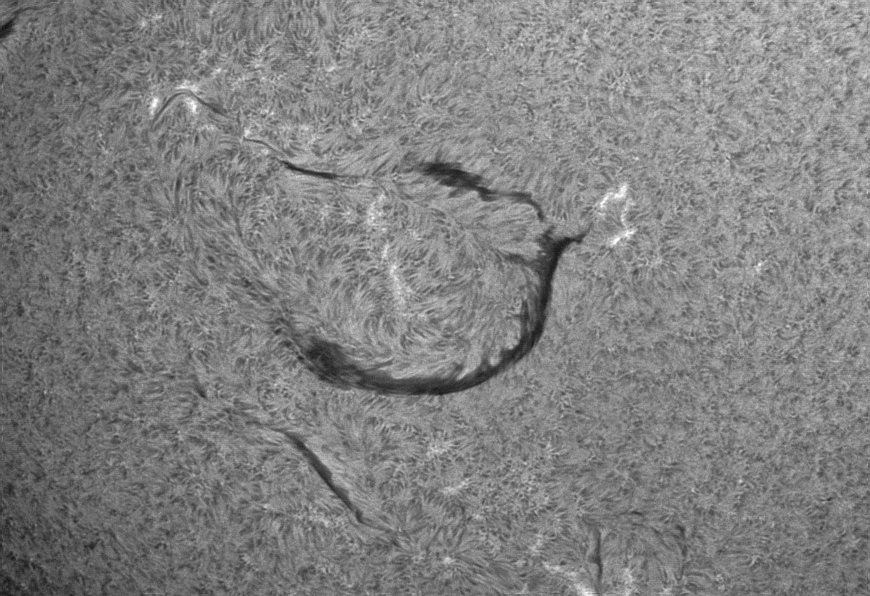
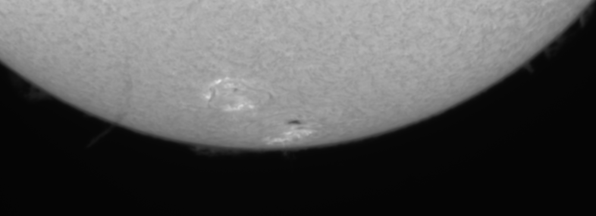

{kind=link}
{kind=link}

based on ImPPG version 0.5
Copyright © 2015 Filip Szczerek (ga.software <at> yahoo.com)
This document can be freely distributed and modified (modified versions must be marked as such and must retain this copyright notice).
ImPPG has been written with post-processing of solar images in mind — this should explain the choice of examples in this tutorial. Of course ImPPG can be used for any kind of source material. The tutorial is based on my usual workflow; if your processing approach and tastes are different, you might still find ImPPG useful (e.g. for tone curve adjustments alone or for final touching up with unsharp masking).
For best results, you should operate on high-bit depth images (16 bits per channel or more).
Examples of ImPPG processing results (click the images for full size):
|
|  |
ImPPG operates on image stacks produced by lucky imaging software (e.g. AutoStakkert!, AviStack, Registax). Image details in such stacks are blurred due to deformation and blurring of the source raw frames. A note of caution: sometimes default settings in those tools will create an already sharpened (or in other ways processed) stack; trying to sharpen it again in ImPPG may give suboptimal results. In such case make sure you are operating on the raw, untouched stack.
ImPPG implements two sharpening algorithms: Lucy–Richardson deconvolution (non-blind with Gaussian kernel) and unsharp masking. L–R deconvolution is a “smart” algorithm — it attempts to take into account and suppress the existing image noise. On the other hand, unsharp masking simply increases amplitude of the small-scale details (including noise, if any). Therefore in most cases it is L–R deconvolution that should be used for primary sharpening, with unsharp masking applied optionally as a final enhancement.
Sharpening via L–R is defined by the following parameters:
Higher values strengthen the sharpening effect (and increase the processing time). Suggested value is 30 to 70. Specifying 0 disables L–R deconvolution.
Sigma (σ) defines the width of Gaussian kernel. Larger values correspond with more coarse sharpening. In order to find the optimal value, select a relatively small area (to ensure fast processing) and use the slider for sigma fine-tuning. Locally stretching the histogram using the tone curve editor increases contrast and can help in assessing the L–R deconvolution results (you can do it simply by pressing “stretch” in the tone curve editor window).
You can use the zoom function to see the changes more easily. The below animation (150% zoom) shows effects of increasing the sigma; note how using too high a value causes bloating and loss of fine details:

The best value will depend on the imaging setup’s sampling rate — which in turn depends on focal ratio and imaging sensor’s pixel size (or, more precisely, pixel pitch), and also on seeing conditions during capture.
Once the optimal sigma is determined, the image can be further sharpened (or blurred) using unsharp masking.
L–R deconvolution can produce noticeable ringing around high-contrast transitions. The “Prevent ringing” checkbox enables slight blurring of borders of overexposed (solid white) areas — e.g. the solar disc in a prominence image — prior to deconvolution. This is an experimental function and its effectiveness may vary. Example:
Unsharp masking can be applied as an additional sharpening or blurring step (or both — see adaptive below). As in the case of L–R deconvolution, the sigma parameter controls how coarse is the sharpening/blurring effect. It is often a good idea to use sigma value close to the one used for L–R deconvolution.
“Amount” specifies how much the small-scale details are amplified. Value 1.0 does nothing, values ≥1.0 sharpen the image, values ≤1.0 blur it (can be useful if the input stack was very noisy and the noise has not been suppressed during L–R deconvolution).
| raw stack | L–R | L–R & unsharp masking |
Some imaging setups produce images with significant oversampling (the smallest captured details are much larger than 1 pixel), e.g. those using telecentric Hα optics. If such an image will be scaled down for publication, it is useful to zoom out the view to the target scale when applying unsharp mask in order to see the final result.
There are situations where applying a constant-amount unsharp mask to the whole image is undesirable. Consider the following unprocessed stack:
When we apply L–R deconvolution and unsharp masking and then try to bring out (stretch) the prominences by applying the following tone curve:
we also underline the image noise (L–R deconvolution does not remove it entirely). Ideally, we would like to avoid oversharpening the areas with a low signal-to-noise ratio — in this case this is the dark background and the faint prominence layer. Or, better yet, apply some smoothing to them. All this without affecting other regions (the disc interior).
This is where adaptive unsharp masking comes to the rescue. In this mode the unsharp masking amount varies smoothly, depending on the input (unprocessed) image brightness. For areas darker than “threshold” the amount is set to “amount min”. For brighter areas it is set to “amount max”. The transition between those values is smooth and takes place over an interval given by “transition width”.
Dependence of the amount on input brightness is as follows:
(click to see a bitmap version)
Note that the brightness, threshold & width are specified using normalized values: zero is black, 1.0 is white.
For our example, we will set amountmin to 0.4 to apply some smoothing to the stretched prominences, but amountmax to 1.8 for a pretty strong sharpening of the disc (where noise is not a problem). Transition width will be left at its default value.
The animation below shows the effects of increasing the threshold from 0.01 to 0.05. We can see how the region of smoothing (where amount < 1.0) is moving from the (originally) darkest parts of the image towards the brighter disc.
The values of amountmin and amountmax can be changed freely depending on what is needed. For example, amountmin < 1.0 and amountmax = 1.0 will smooth dark areas only; amountmin = 1.0 and amountmax > 1.0 will sharpen only the bright areas. It is also allowed to set amountmin > amountmax, if you ever need to sharpen the dark areas and leave unchanged (or smooth out) the bright ones.
{kind=link}
{kind=link}
{kind=link}
{kind=link}
{kind=link}
{kind=link}
{kind=link}
{kind=link}
{kind=link}